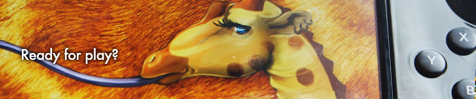
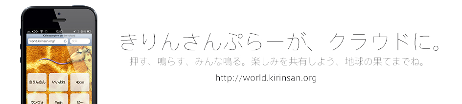
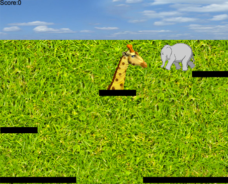
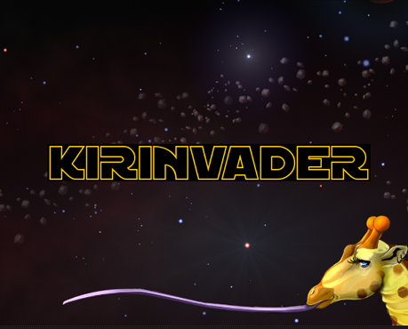
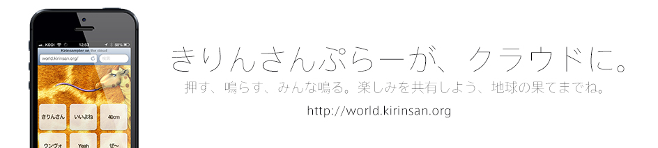
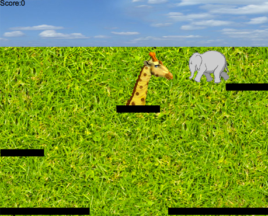
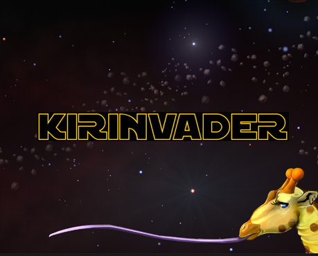

きりんさん
テクノロジー 
遊びと学びは常に表裏一体である。幼児教育に於いて学ぶ事は即ち遊びそのものであり、幼少時の遊戯体験がその後の学習に多いに影響する。kirinsan.orgでは、歌う事の先にある遊びという学びにも大いに関心を持っており、そのためのプロジェクトも平行して行っている。 - kirinsan.org
きりんさんぷらー on the cloud

きりんさん

KIRINVADER

遊びと学びは常に表裏一体である。幼児教育に於いて学ぶ事は即ち遊びそのものであり、幼少時の遊戯体験がその後の学習に多いに影響する。kirinsan.orgでは、歌う事の先にある遊びという学びにも大いに関心を持っており、そのためのプロジェクトも平行して行っている。 - kirinsan.org


